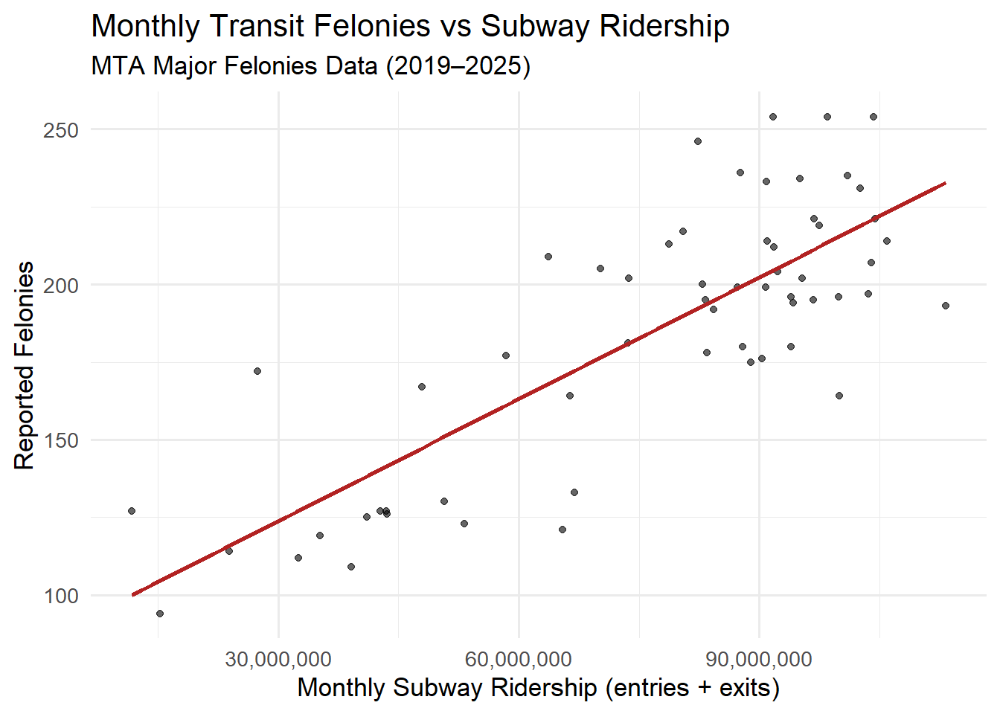
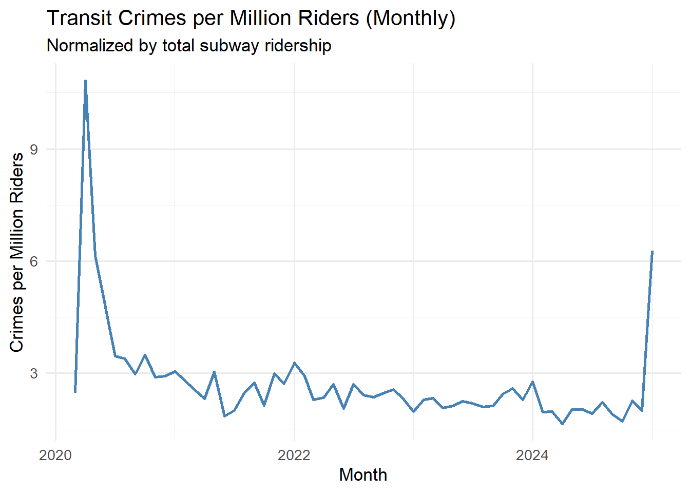

# ---- 1. Load Libraries ----
library(tidyverse)── Attaching core tidyverse packages ──────────────────────── tidyverse 2.0.0 ──
✔ dplyr 1.1.4 ✔ readr 2.1.5
✔ forcats 1.0.0 ✔ stringr 1.5.1
✔ ggplot2 3.5.2 ✔ tibble 3.3.0
✔ lubridate 1.9.4 ✔ tidyr 1.3.1
✔ purrr 1.1.0
── Conflicts ────────────────────────────────────────── tidyverse_conflicts() ──
✖ dplyr::filter() masks stats::filter()
✖ dplyr::lag() masks stats::lag()
ℹ Use the conflicted package (<http://conflicted.r-lib.org/>) to force all conflicts to become errorslibrary(lubridate)
library(scales)
Attaching package: 'scales'
The following object is masked from 'package:purrr':
discard
The following object is masked from 'package:readr':
col_factorlibrary(janitor)Warning: package 'janitor' was built under R version 4.5.2
Attaching package: 'janitor'
The following objects are masked from 'package:stats':
chisq.test, fisher.testlibrary(readxl)
# ---- 2. Define File Paths (🔧 fill in manually) ----
path_felonies <- "C:/Users/tanma/Downloads/MTA_Major_Felonies.csv"
path_summons <- "C:/Users/tanma/Downloads/MTA_Summonses_and_Arrests__Beginning_2019.csv"
path_ridership <- "C:/Users/tanma/Downloads/MTA_Daily_Ridership_Data__2020_-_2025_20251106.csv"
# =========================================================
# 🧹 3. Data Cleaning & Aggregation
# =========================================================
# ---- MTA Major Felonies ----
felonies <- read_csv(path_felonies) |>
clean_names()Rows: 2026 Columns: 6
── Column specification ────────────────────────────────────────────────────────
Delimiter: ","
chr (4): Month, Agency, Police Force, Felony Type
dbl (2): Felony Count, Crimes per Million Riders
ℹ Use `spec()` to retrieve the full column specification for this data.
ℹ Specify the column types or set `show_col_types = FALSE` to quiet this message.# Try to find date/month and count columns
date_col <- names(felonies)[str_detect(names(felonies), regex("month|date", ignore_case = TRUE))][1]
count_col <- names(felonies)[str_detect(names(felonies), regex("count|number|total", ignore_case = TRUE))][1]
felonies <- felonies |>
mutate(
month = floor_date(parse_date_time(!!sym(date_col), orders = c("ymd", "mdy", "my")), "month"),
felony_count = as.numeric(!!sym(count_col))
) |>
filter(!is.na(month), felony_count > 0) |>
group_by(month) |>
summarise(felony_count = sum(felony_count, na.rm = TRUE), .groups = "drop")
# ---- MTA Summonses & Arrests ----
summons <- read_csv(path_summons) |>
clean_names()Rows: 972 Columns: 5
── Column specification ────────────────────────────────────────────────────────
Delimiter: ","
chr (4): Month, Agency, Police Force, Metric
dbl (1): Total
ℹ Use `spec()` to retrieve the full column specification for this data.
ℹ Specify the column types or set `show_col_types = FALSE` to quiet this message.if ("date" %in% names(summons)) {
summons <- summons |>
mutate(month = floor_date(parse_date_time(date, orders = c("ymd", "mdy")), "month")) |>
count(month, name = "summons_total")
} else {
summons <- tibble(month = felonies$month, summons_total = NA_real_)
}
# ---- MTA Daily Ridership (robust coercion) ----
ridership <- readr::read_csv(path_ridership, show_col_types = FALSE)
# find the subways total column name
sub_col <- names(ridership)[
stringr::str_detect(names(ridership),
stringr::regex("^\\s*subways\\s*:\\s*total\\s*estimated\\s*ridership\\s*$",
ignore_case = TRUE))
]
if (length(sub_col) == 0) {
sub_col <- names(ridership)[
stringr::str_detect(names(ridership),
stringr::regex("subway.*total.*ridership", ignore_case = TRUE))
]
}
stopifnot(length(sub_col) >= 1)
sub_col <- sub_col[1]
# helper that only parses if needed
to_numeric <- function(x) {
if (is.numeric(x)) as.numeric(x) else readr::parse_number(as.character(x))
}
ridership <- ridership %>%
mutate(
Date = dplyr::coalesce(
suppressWarnings(lubridate::mdy(as.character(.data$Date))),
suppressWarnings(lubridate::ymd(as.character(.data$Date)))
),
subways_total = to_numeric(.data[[sub_col]])
) %>%
filter(!is.na(Date), !is.na(subways_total)) %>%
mutate(month = lubridate::floor_date(Date, "month")) %>%
group_by(month) %>%
summarise(subways_total = sum(subways_total, na.rm = TRUE), .groups = "drop")
# =========================================================
# 🔗 4. Merge Datasets
# =========================================================
merged <- ridership |>
left_join(felonies, by = "month") |>
left_join(summons, by = "month") |>
mutate(
crimes_per_million = 1e6 * felony_count / subways_total
) |>
drop_na(felony_count, subways_total)
# =========================================================
# 📊 5. Correlation Analysis
# =========================================================
cor_overall <- cor(merged$felony_count, merged$subways_total, use = "complete.obs")
cor_pre2022 <- merged |>
filter(year(month) < 2022) |>
summarise(cor = cor(felony_count, subways_total, use = "complete.obs")) |>
pull(cor)
cor_post2022 <- merged |>
filter(year(month) >= 2022) |>
summarise(cor = cor(felony_count, subways_total, use = "complete.obs")) |>
pull(cor)
cat("Correlation summary:\n")Correlation summary:print(tibble(
Period = c("All Months", "Pre-2022", "2022+"),
Correlation = c(cor_overall, cor_pre2022, cor_post2022)
))# A tibble: 3 × 2
Period Correlation
<chr> <dbl>
1 All Months 0.804
2 Pre-2022 0.790
3 2022+ 0.285# =========================================================
# 📈 6. Visualizations
# =========================================================
# ---- A) Scatter with Regression Line ----
p1 <- ggplot(merged, aes(x = subways_total, y = felony_count)) +
geom_point(alpha = 0.6) +
geom_smooth(method = "lm", se = FALSE, color = "firebrick") +
scale_x_continuous(labels = label_number(big.mark = ",")) +
scale_y_continuous(labels = label_number(big.mark = ",")) +
labs(
title = "Monthly Transit Felonies vs Subway Ridership",
subtitle = "MTA Major Felonies Data (2019–2025)",
x = "Monthly Subway Ridership (entries + exits)",
y = "Reported Felonies"
) +
theme_minimal(base_size = 13)
print(p1)`geom_smooth()` using formula = 'y ~ x'
# ---- B) Indexed Time Series (baseline = 100) ----
base_vals <- merged |>
filter(month == min(month))
merged <- merged |>
mutate(
ridership_index = 100 * subways_total / base_vals$subways_total,
crimes_index = 100 * felony_count / base_vals$felony_count
)
merged_long <- merged |>
select(month, ridership_index, crimes_index) |>
pivot_longer(-month, names_to = "metric", values_to = "index")
p2 <- ggplot(merged_long, aes(month, index, color = metric)) +
geom_line(linewidth = 1.1) +
labs(
title = "Indexed Trends: Transit Crimes vs Ridership",
subtitle = "Baseline = 100 (first month in dataset)",
x = "Month",
y = "Index",
color = NULL
) +
theme_minimal(base_size = 13) +
theme(legend.position = "bottom")
print(p2)
# ---- C) Crimes per Million Riders ----
p3 <- ggplot(merged, aes(month, crimes_per_million)) +
geom_line(linewidth = 1, color = "steelblue") +
labs(
title = "Transit Crimes per Million Riders (Monthly)",
subtitle = "Normalized by total subway ridership",
x = "Month",
y = "Crimes per Million Riders"
) +
theme_minimal(base_size = 13)
print(p3)
# =========================================================
# 🧾 7. Summary Output
# =========================================================
summary(merged$crimes_per_million) Min. 1st Qu. Median Mean 3rd Qu. Max.
1.641 2.101 2.351 2.737 2.836 10.827 print(head(merged))# A tibble: 6 × 7
month subways_total felony_count summons_total
<dttm> <dbl> <dbl> <dbl>
1 2020-03-01 00:00:00 73625223 181 NA
2 2020-04-01 00:00:00 11730474 127 NA
3 2020-05-01 00:00:00 15275851 94 NA
4 2020-06-01 00:00:00 23928304 114 NA
5 2020-07-01 00:00:00 32508961 112 NA
6 2020-08-01 00:00:00 35197734 119 NA
# ℹ 3 more variables: crimes_per_million <dbl>, ridership_index <dbl>,
# crimes_index <dbl>cat("\n✅ Analysis Complete — All Outputs Ready for Slide Presentation\n")
✅ Analysis Complete — All Outputs Ready for Slide Presentation